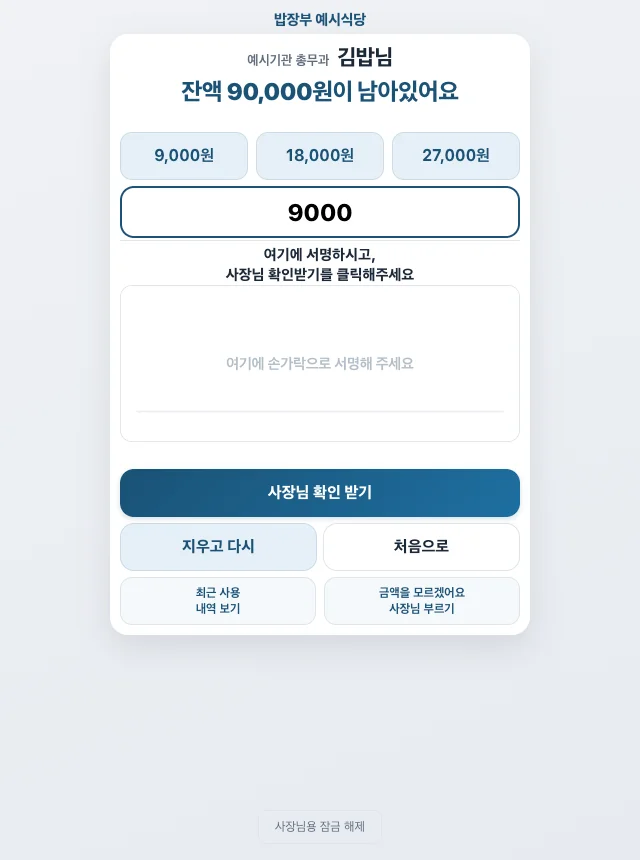

동네 음식점 · 단체·직원 식대 장부
우리 가게 식대 장부,
폰·태블릿으로.
손님이 적고, 사장님이 확인해 기록해요.
완전 무료·가입 없음 · 결제앱이 아닙니다
가입 없이 시작해요. 각 앱은 새 탭으로 열려요.

식사 후, 이렇게 기록해요
손님이 할 일
내 이름 찾기 → 금액·서명
이름과 소속을 확인하고,
다 적었으면 [사장님 확인 받기]를 눌러요.
사장님이 할 일
비밀번호 → 확인 → 저장
이름·금액·서명을 보고 저장해요.
손님이 적기만 해서는 기록되지 않아요.
가게마다 기기 한 대로 사용해요. 장부는 기기에 저장되니 별도 백업도 챙겨 주세요.
이것만 먼저 알아두세요
이 앱으로 돈이 오가나요?
아니요. 받은 선금과 식사 내역을 기록하는 장부예요. 운영자는 돈을 받거나 보관하지 않아요.
손님도 앱을 설치해야 하나요?
아니요. 가게 태블릿이나 스마트폰에서 입력하면 돼요. 직원용 앱은 내 폰에 따로 적어 두고 싶을 때만 써요. 가게 장부와 자동으로 연결되지 않아요.
폰을 바꾸거나 앱을 지워도 되나요?
먼저 장부와 가게 열쇠를 백업해 주세요. 앱을 지워도 서버의 가게 등록은 남아요. 등록 해제와 기기 변경 순서는 사장님 안내서를 확인해 주세요.